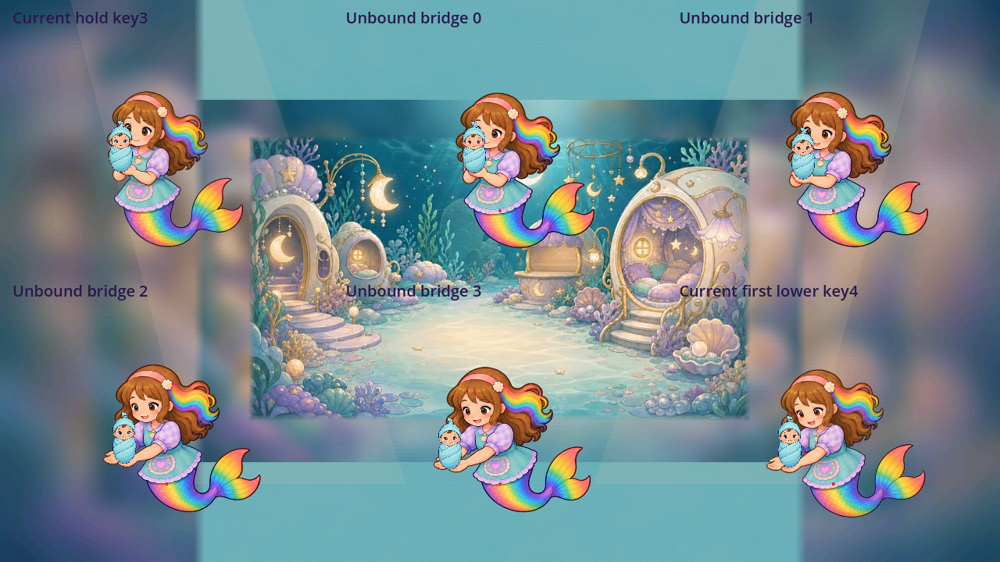
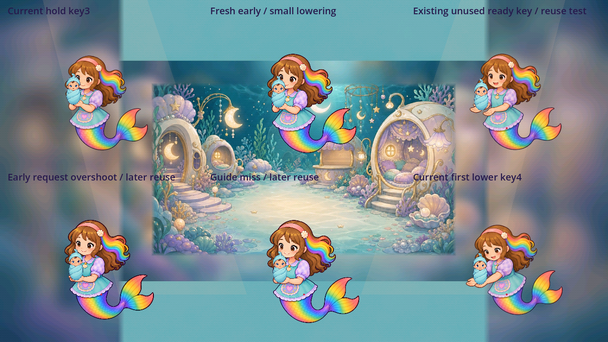
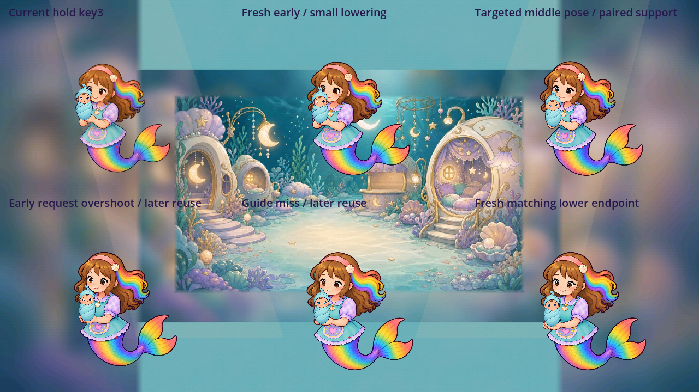
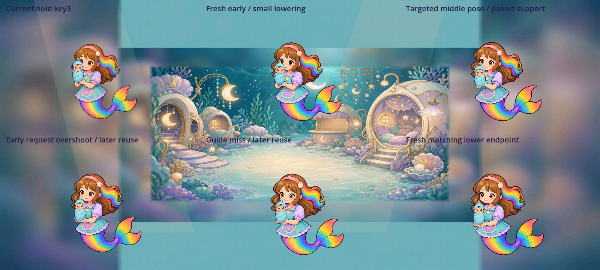

Nursery lowering source refinement
All four earlier sources
The original 1254-square four-source master is preserved. Exact nonoverlapping RGBA windows were copied into four 1024 review canvases; all native pixels reconstruct. The first comparison mixed the old runtime legacy reference pivot with new anatomical-center estimates. Its 25.6px entry and 21.3px middle distances describe that failed proposed transform, not pure anatomical drift. No original metadata was rewritten.

1600-wide comparisonLOWER-BRIDGE-0
Source style 4.6 / first contract opinion 4.0Complete folded-arm body retains the source family. Under the first comparison's new anatomical-center estimates versus the old legacy pivot, the hands shift 25.6px sideways on entry. This is not a valid current-contract bridge. The pivot definitions must be made consistent before a redesigned chain can be judged.
LOWER-BRIDGE-1
Source style 4.6 / first contract opinion 4.3Complete second held body lowers the receiving hands slightly and remains readable in the native static view. The later source 2 gap is 21.3px under the first manual landmarks. A source-style pass does not establish the full intervening hand path.
LOWER-BRIDGE-2
Source style 4.6 / first contract opinion 4.3The forward/downward receiving pose is a possible later reuse candidate. Source style and static support remain clear, but its transition from the preceding held pose needs more states or a consistently measured reference contract. It is unbound.
LOWER-BRIDGE-3
Source style 4.6 / first contract opinion 4.2Complete lower-reaching body has readable hands and costume. The initial manual comparison overshoots the current endpoint then returns 8.5px. Keep this as source/review evidence while contact and pivot continuity are unresolved.
Each regenerated candidate
Early attempt 1
Style 4.6 / requested purpose 4.0Complete identity and anatomy, but arms are already extended like the lower endpoint. Rejected for the requested early state; retained unchanged.
Saved generation specificationEarly attempt 2
Source/static role 4.6Folded elbows and a small lower receiving cup preserve a gentle early step. The reference canvas pivot matches the held key 3 contract. The new cup supports the separate infant at native scale.
Saved generation specificationMiddle attempt 1
Style 4.6 / requested early purpose 4.0 / later static role 4.6Hands lower too far for the early request. Separate native review accepts this complete source as a later paired-palm state; the failed request remains 4.0.
Saved generation specificationMiddle attempt 2
Style 4.6 / requested early purpose 4.0 / later static role 4.6Neutral position-guide control misses the requested height. It is not approved control. At its actual later height, connected paired hands support the separate infant; that separately measured reuse meets 4.6. No guide appearance pixels enter the character.
Saved generation specificationMiddle attempt 3
Source/static requested role 4.6Built-in local articulated-arm edit raises the receiving cup while preserving the body family. The usable inner palm pad at 290,715 differs from the lower finger outline. Both palms support the infant in native and 2x views.
Saved generation specificationMatching endpoint attempt 1
Source/static requested role 4.6A targeted complete-character edit lowers and groups the hands while preserving the preceding face, head/body size, costume and tail composition. This removes the old endpoint silhouette snap in the standalone source study. The next basket/release transition is still unreviewed.
Saved generation specificationRejections in context
Unused ready-key reuse:4.4 for lowering
The six-state distance test passes, but the ready sprite places its other hand away from the infant and changes upper-body direction. It remains a useful ready source with its earlier 4.6 opinion; this proposed lowering reuse is rejected. A numeric pass cannot conceal weak contact.

Old endpoint timed seam:4.4
Paired support improves, but the old endpoint changes head/body size and expression abruptly. This failure remains inspectable in the original 45-frame study and its source hashes.
Every retained original motion-study frameSelected complete-source bridge:4.6, standalone study only
Five authored changes lower the infant on one constant-size visible supporting cup. The new endpoint preserves the preceding head/body composition. The hand steps are 7.77,6.78,6.98,5.98 and 7.05px at 250px whole-card extent, all below the previously declared 8px draft target. Each changed state is a complete generated figure; no pixels are blended, limbs warped or missing action hidden by a hold.


Declared 30fps playback
Frames 0–14 are a quiet inspection hold; frames 15–19 are five authored transitions occupying 0.167s at 30fps; frames 20–44 hold the endpoint for inspection. The left figure uses 250px card/72px infant, the right 2x detail. This fixed-pivot diagnostic does not execute game input or the carry route.
Slow inspection playback
1600-wide study · All 90 source-bound lossless native framesMP 4s are compressed inspection derivatives. Native lossless captures and whole generated RGBA sources are preserved. Interactive gameplay source study only; no authored cinematic delivery claim.
What remains weak
The live game still uses the prior 8 keys and original infants/helper. Its complete catch/carry/lower/release action remains 4.2 and safe-return 3.4. Bind accepted whole-canvas derivatives at new runtime paths, inspect the following basket/contact transition, then replay intentional input, passive/held/interrupt cases and all live phases. Faron needs additional approach/pickup/carry/lower states. Hundreds of other weak job objects, full Day One use discovery and final owner approval remain unfinished.